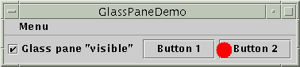
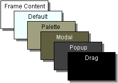
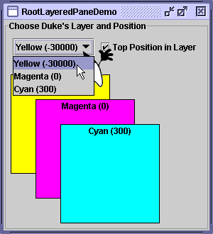

Feedback Form
|
|
Start of Tutorial > Start of Trail > Start of Lesson |
Search
Feedback Form |
In general, you don't directly create aJRootPaneobject. Instead, you get aJRootPane(whether you want it or not!) when you instantiateJInternalFrameor one of the top-level Swing containers, such asJApplet,JDialog, andJFrame.Using Top-Level Containers tells you the basics of using root panes — getting the content pane, setting its layout manager, and adding Swing components to it. This section tells you more about root panes, including the components that make up a root pane and how you can use them. Another place to get information about root panes is The Swing Connection, especially the article Understanding Containers.
As the preceding figure shows, a root pane has four parts:
- The glass pane
- Hidden, by default. If you make the glass pane visible, then it's like a sheet of glass over all the other parts of the root pane. It's completely transparent unless you implement the glass pane's
paintComponentmethod so that it does something, and it intercepts input events for the root pane. In the next section, you'll see an example of using a glass pane.- The layered pane
- Serves to position its contents, which consist of the content pane and the optional menu bar. Can also hold other components in a specified Z order. For information, see The Layered Pane.
- The content pane
- The container of the root pane's visible components, excluding the menu bar. For information on using the content pane, see Using Top-Level Containers.
- The optional menu bar
- The home for the root pane's container's menus. If the container has a menu bar, you generally use the container's
setJMenuBarmethod to put the menu bar in the appropriate place. For more information on using menus and menu bars, see How to Use Menus.
The glass pane is useful when you want to be able to catch events or paint over an area that already contains one or more components. For example, you can deactivate mouse events for a multi-component region by having the glass pane intercept the events. Or you can display an image over multiple components using the glass pane.Here's a picture of an application that demonstrates glass pane features. It contains a check box that lets you set whether the glass pane is "visible" — whether it can get events and paint itself onscreen. When the glass pane is visible, it blocks all input events from reaching the components in the content pane. It also paints a red dot in the place where it last detected a mouse-pressed event.
 [PENDING: This snapshot will be updated.]
Try this:
- Run GlassPaneDemo using JavaTM Web Start
. Or, to compile and run the example yourself, consult the example index.
- Click Button 1.
The button's appearance changes to show that it's been clicked.- Click the check box so that the glass pane becomes "visible," and then click Button 1 again.
The button does not act clicked because the glass pane intercepts all the mouse events. The glass pane paints a red circle where you release the mouse.- Click the check box again so that the glass pane is hidden.
When the glass pane detects an event over the check box, it forwards it to the check box. Otherwise, the check box would not respond to clicks.The following code from
GlassPaneDemo.javashows and hides the glass pane. This program happens to create its own glass pane. However, if a glass pane doesn't do any painting, the program might simply attach listeners to the default glass pane, as returned by
getGlassPane.myGlassPane = new MyGlassPane(...); changeButton.addItemListener(myGlassPane); frame.setGlassPane(myGlassPane); ... class MyGlassPane extends JComponent implements ItemListener { ... //React to change button clicks. public void itemStateChanged(ItemEvent e) { setVisible(e.getStateChange() == ItemEvent.SELECTED); } ... }The next code snippet implements the mouse-event handling for the glass pane. If a mouse event occurs over the check box, then the glass pane redispatches the event so that the check box receives it.
Here is the code in...//In the implementation of the glass pane's mouse listener: public void mouseMoved(MouseEvent e) { redispatchMouseEvent(e, false); } .../* The mouseDragged, mouseClicked, mouseEntered, * mouseExited, and mousePressed methods have the same * implementation as mouseMoved. */... public void mouseReleased(MouseEvent e) { redispatchMouseEvent(e, true); } private void redispatchMouseEvent(MouseEvent e, boolean repaint) { Point glassPanePoint = e.getPoint(); Container container = contentPane; Point containerPoint = SwingUtilities.convertPoint( glassPane, glassPanePoint, contentPane); if (containerPoint.y < 0) { //we're not in the content pane //Could have special code to handle mouse events over //the menu bar or non-system window decorations, such as //the ones provided by the Java look and feel. } else { //The mouse event is probably over the content pane. //Find out exactly which component it's over. Component component = SwingUtilities.getDeepestComponentAt( container, containerPoint.x, containerPoint.y); if ((component != null) && (component.equals(liveButton))) { //Forward events over the check box. Point componentPoint = SwingUtilities.convertPoint( glassPane, glassPanePoint, component); component.dispatchEvent(new MouseEvent(component, e.getID(), e.getWhen(), e.getModifiers(), componentPoint.x, componentPoint.y, e.getClickCount(), e.isPopupTrigger())); } } //Update the glass pane if requested. if (repaint) { glassPane.setPoint(glassPanePoint); glassPane.repaint(); } }MyGlassPanethat implements the painting.protected void paintComponent(Graphics g) { if (point != null) { g.setColor(Color.red); g.fillOval(point.x - 10, point.y - 10, 20, 20); } }
A layered pane is a container with depth such that overlapping components can appear one on top of the other. General information about layered panes is in How to Use Layered PanesEach root pane places its menu bar and content pane in an instance of
JLayeredPane. The Z ordering that the layered pane provides enables behavior such as displaying popup menus above other components.You can choose to put components in the root pane's layered pane. If you do, then you should be aware that certain depths are defined to be used for specific functions, and you should use the depths as intended. Otherwise, your components might not play well with the others. Here's a diagram that shows the functional layers and their relationship:
 The table below describes the intended use for each layer and lists theJLayeredPaneconstant that corresponds to each layer:
Layer Name Value Description FRAME_CONTENT_LAYERnew Integer(-30000)The root pane adds the menu bar and content pane to its layered pane at this depth. DEFAULT_LAYERnew Integer(0)If you don't specify a component's depth when adding it to a layered pane, the layered pane puts it at this depth. PALETTE_LAYERnew Integer(100)This layer is useful for floating tool bars and palettes. MODAL_LAYERnew Integer(200)Modal internal-frame dialogs would belong in this layer. POPUP_LAYERnew Integer(300)Popups go in this layer because they need to appear above just about everything. DRAG_LAYERnew Integer(400)Intended to be used when a component is being dragged. The component should return to its regular layer when dropped. For information on the built-in drag-and-drop support, see How to Use Drag and Drop and Data Transfer Here is a picture of RootLayeredPaneDemo, which is a version of LayeredPaneDemo that uses the root pane's layered pane, rather than creating a new layered pane.
 [PENDING: This snapshot will be updated. The Cyan layer is now 301.]
Try this:
- Run RootLayeredPaneDemo using Java Web Start
- Move the cursor around in the window, so that Duke moves on top of other components.
Note that when the cursor is on top of non-label component — whether it's in the content pane or in the Java-look-and-feel provided title bar — Duke's movement is temporarily stopped. This is because mouse-motion events go to the component that's deepest in the containment hierarchy and is interested in mouse events. The mouse-motion listener that moves Duke is registered on the layered pane, and most of the components in that pane (with the exception of the labels) happen to have mouse-motion listeners. When the mouse moves over an interested component in the layered pane, the layered pane doesn't get the event and the interested component does.- Making sure the Top Position in Layer check box is selected, change Duke's layer to Yellow (-30000).
As before, he appears on top of other components, except for the Magenta (0) and Cyan (301) rectangles.- Keeping Duke in the Yellow layer, click the check box to send Duke to the back of layer -30000.
Duke disappears because the content pane and all the components in it are now above him.- Change Duke's layer to Cyan (301), move Duke down a bit so he's standing on the top edge of the Yellow rectangle, and then press Space to bring up the combo box's drop-down list.
If the look and feel implements the drop-down list as a lightweight popup, Duke appears on top of the drop-down list.
The tables that follow list the API for using root panes, glass panes, and content panes. For more information on using content panes, go to Using Top-Level Containers. Here are the tables in this section:The API for using other parts of the root pane is described elsewhere:
Using a Root Pane Method Purpose JRootPane getRootPane()
(inJApplet,JDialog,JFrame,JInternalFrame, andJWindow)Get the root pane of the applet, dialog, frame, internal frame, or window. static JRootPane getRootPane(Component)
(inSwingUtilities)If the component contains a root pane, return that root pane. Otherwise, return the root pane (if any) that contains the component. JRootPane getRootPane()
(inJComponent)Invoke the SwingUtilitiesgetRootPanemethod for theJComponent.void setDefaultButton(JButton)
JButton getDefaultButton()Set or get which button (if any) is the default button in the root pane. A look-and-feel-specific action, such as pressing Enter, causes the button's action to be performed.
Setting or Getting the Root Pane's Contents
The following methods are defined inJApplet,JDialog,JFrame,JInternalFrame,JRootPane, andJWindow, unless noted otherwise.Method Purpose void setGlassPane(Component)
Component getGlassPane()Set or get the glass pane. void setLayeredPane(JLayeredPane)
Container getLayeredPane()Set or get the layered pane. void setContentPane(Container)
Container getContentPane()Set or get the content pane. void setJMenuBar(JMenuBar)
JMenuBar getJMenuBar()
(not defined inJWindow)Set or get the menu bar.
Every Swing program has a root pane, but few reference it directly. The examples in the following list illustrate how to use features ofJRootPaneor the glass pane. Also see these lists:
- Examples that Use Layered Panes
- Examples that Use Menus
- Examples that Use Frames (for examples of using content panes)
Example Where Described Notes GlassPaneDemoThis section Uses a glass pane that paints a bit and redispatches events. RootLayeredPaneDemoThis section Adapts LayeredPaneDemo to use the root pane's layered pane. ListDialogHow to Use Lists Sets the default button for a JDialog.FrameDemo2How to Make Frames Sets the default button for a JFrame.DragFileDemoHow to Use Drag and Drop and Data Transfer Sets the default button for whatever root pane contains an instance of a particular JPanelsubclass. Uses thegetRootPanemethod inherited fromJComponent.
|
|
Start of Tutorial > Start of Trail > Start of Lesson |
Search
Feedback Form |
Copyright 1995-2004 Sun Microsystems, Inc. All rights reserved.